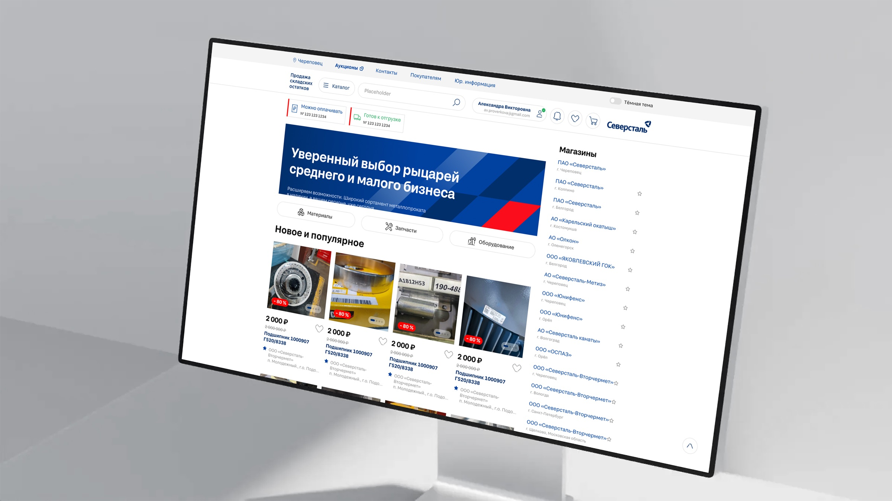
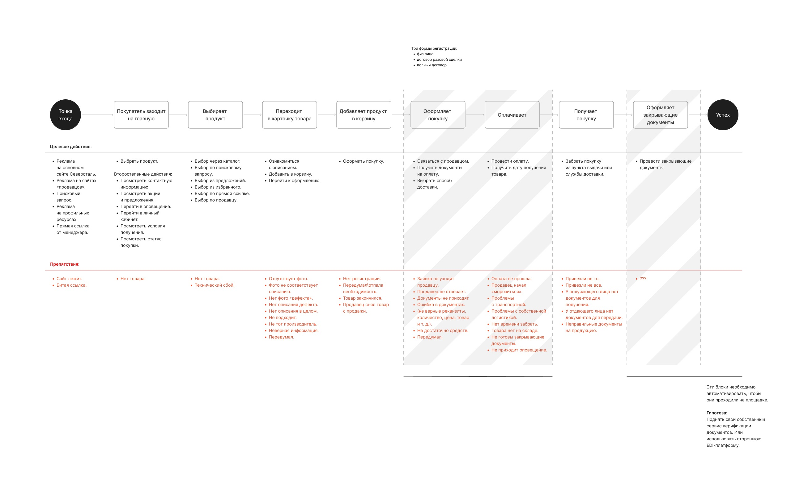
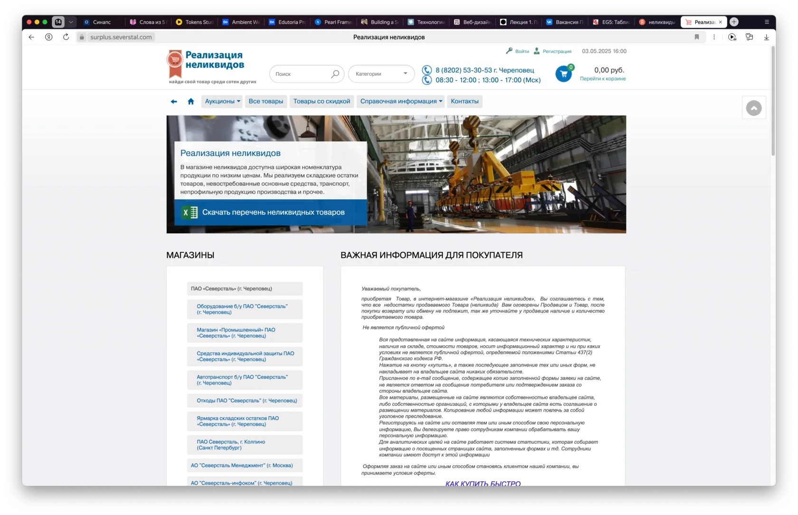
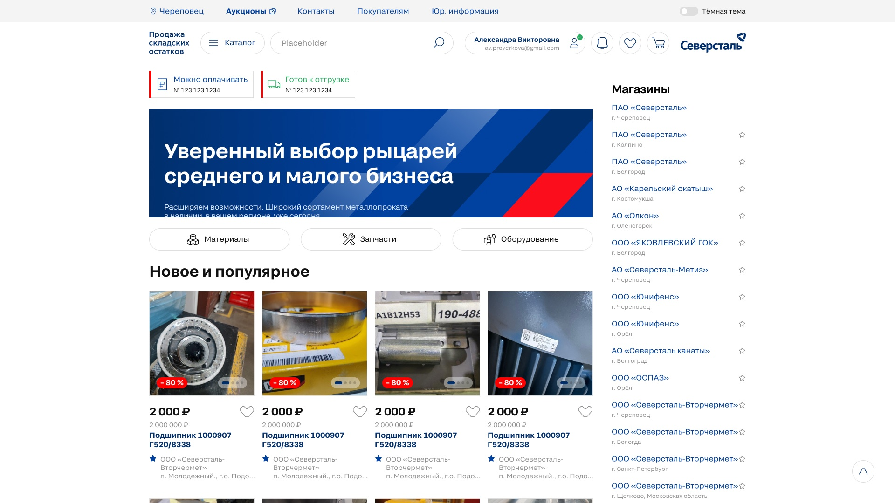
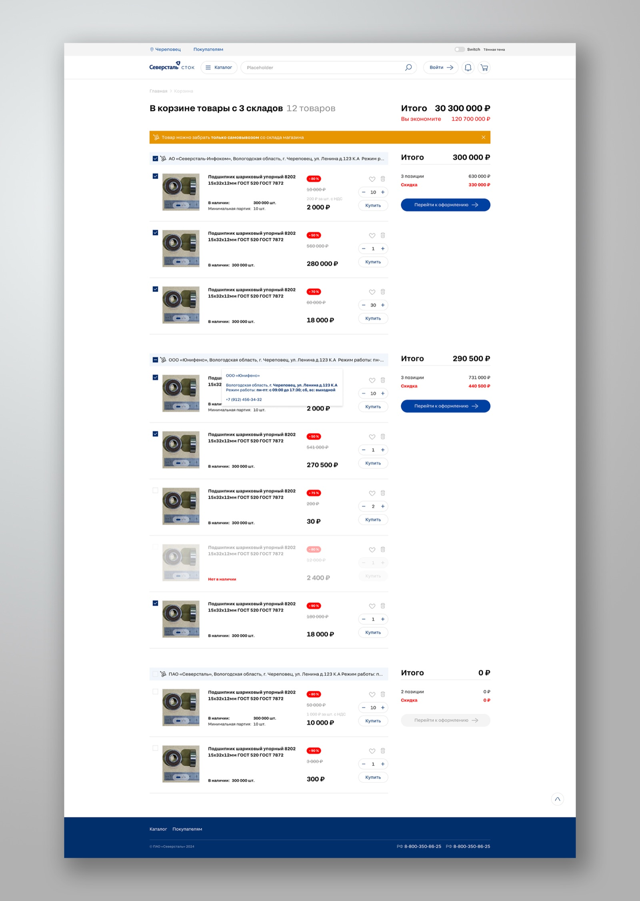
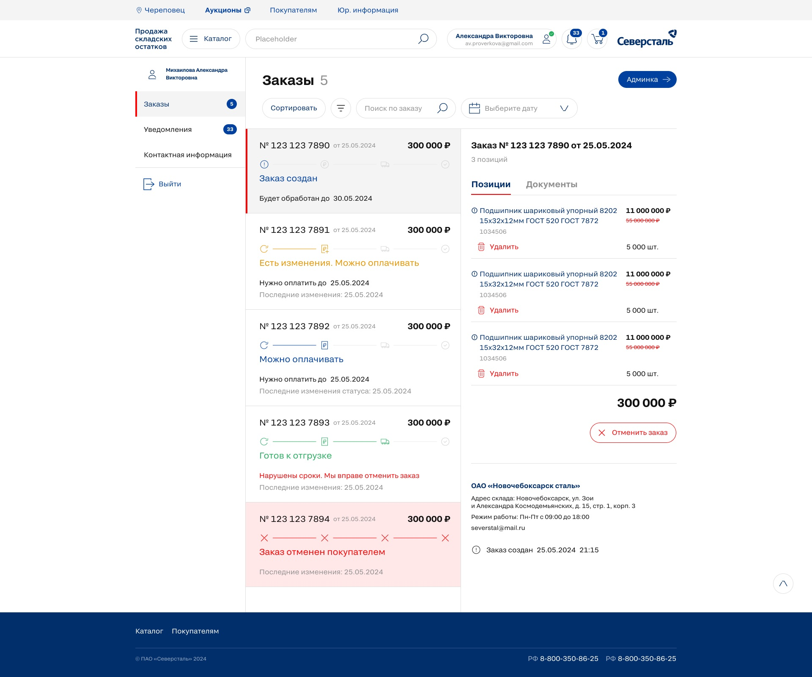
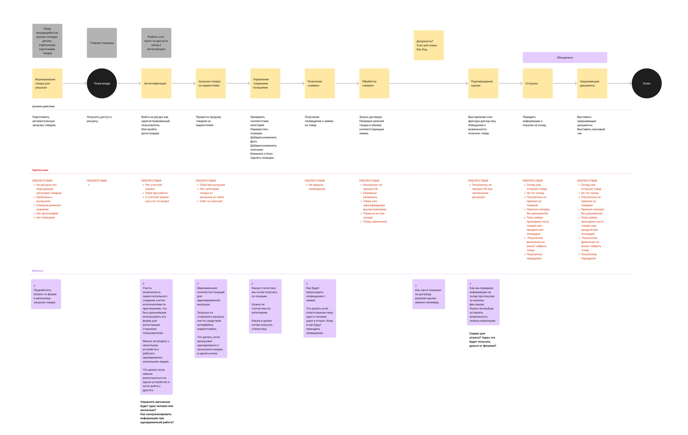

2,5 ч→10 мин
время выполнения типовой задачи пользователем
- Как мерили
- Замер до и после редизайна на 12 пользователях.
Северсталь · E-commerce · B2B / B2C
Площадка, на которой холдинг продаёт неликвидные остатки производства и б/у оборудование. До проекта покупать на ней было так неудобно, что покупатели звонили в отдел продаж и заключали сделку по телефону. Мы перезапустили её с нуля — от дискавери до MVP.
Интерфейсу было 10 лет, площадка не была связана с учётными системами. Типовая задача занимала у пользователя около 2,5 часов. Покупатели уходили в телефон.
Добился дискавери, которого не было в плане. Провёл 63 интервью, построил CJM, собрал роадмап на 12 месяцев, спроектировал все сценарии и проверил их на 78 юзабилити-тестах.
Перенести на площадку этапы, которые жили офлайн: оформление, оплату, получение и закрывающие документы. Не просто «обновить витрину».
Задача пользователя — 10 минут вместо 2,5 часов, +48% продаж год к году, +32% конверсии в покупку.

01 · Результаты
время выполнения типовой задачи пользователем
продаж площадки
конверсия в покупку
количество заказов
02 · Контекст и проблема
Команда собиралась под новый для компании тип продукта: у владельца продукта и продакта не было опыта с маркетплейсами, зато был опыт в продажах и производстве. Ещё одно ограничение: прямого доступа к покупателям у команды не было. Исходный план предполагал сразу перерисовать интерфейс. Я предложил заложить в роадмап этап дискавери.
03 · Исследование

CJM покупателяЗаштрихованные этапы происходили вне площадки
Оформление, оплата, получение и документы шли через звонки и почту. Там сделки и срывались.
Что это значит для дизайна
Новая витрина без этих этапов не решила бы проблему. Перенос офлайн-этапов на площадку стал главной ставкой роадмапа.
Препятствия на этапе выбора: «нет фото», «фото не соответствует описанию», «нет фото дефекта», «нет описания дефекта».
Что это значит для дизайна
В карточке товара обязательны фото дефектов и блок «Состояние». В форме менеджера эти поля стали обязательными.
Покупатель выбирал позицию, а она давно продана: без синхронизации каталог врал.
Что это значит для дизайна
Синхронизация остатков вошла в MVP, а не в «потом», хотя это технически дорого. Без неё любой UX терял доверие.
Как я рассуждал
Если покупатели звонят, сайт проигрывает телефону по какому-то критерию. Я сформулировал гипотезу: телефон выигрывает не удобством, а гарантией — менеджер подтверждает наличие, состояние и документы. Интервью её подтвердили, и задача сменилась с «обновить витрину» на «перенести гарантии на площадку».
Продавцы — тоже пользователи. Прямого доступа к покупателям не было, поэтому 63 интервью я провёл с пользователями площадки внутри холдинга. Плохая карточка без фото дефекта рождалась в кабинете продавца, где позицию заводили часами, а не на витрине. Поэтому кабинет продавца вошёл в роадмап наравне с витриной.
Дискавери нужно защищать прогрессом, а не обещаниями. Руководство ждёт видимых результатов. Вместо экранов я регулярно показывал то, что мы узнали: цитаты из интервью, карту пути, записи тестов. Это дало команде время на исследование и сделало решения общими, а не «идеей дизайнера».
04 · Развилки
05 · Решение



КорзинаТовары разных складов в одной покупке

Заказы покупателяЭтапы, которые раньше шли по телефону

От проблем к фичамРабочая карта для роадмапа
Все сценарии и экраны площадки: главная, каталог и поиск, карточка товара с блоком состояния, корзина, оформление, личный кабинет покупателя, кабинет менеджера для заведения позиций и обработки заказов, email-уведомления.
06 · Ретроспектива
Путь до первого релиза оказался долгим. Сейчас я выпустил бы каталог с синхронизацией первым релизом, а офлайн-этапы автоматизировал бы следующими.
Базовые метрики старой площадки пришлось собирать по CRM и звонкам. С разметкой событий заранее эффект каждого релиза был бы виден точнее.
Кабинет менеджера сначала проектировали по остаточному принципу, а он определял скорость обработки заказов не меньше, чем витрина.
Главный вывод: когда покупатели уходят в телефон, проблема редко в цвете кнопок. CJM показал, где на самом деле рвётся сделка, и это изменило весь роадмап.
Другие кейсы
Контакты
Ищу роль Senior Product Designer в B2B. На звонке покажу полный CJM и роадмап проекта.